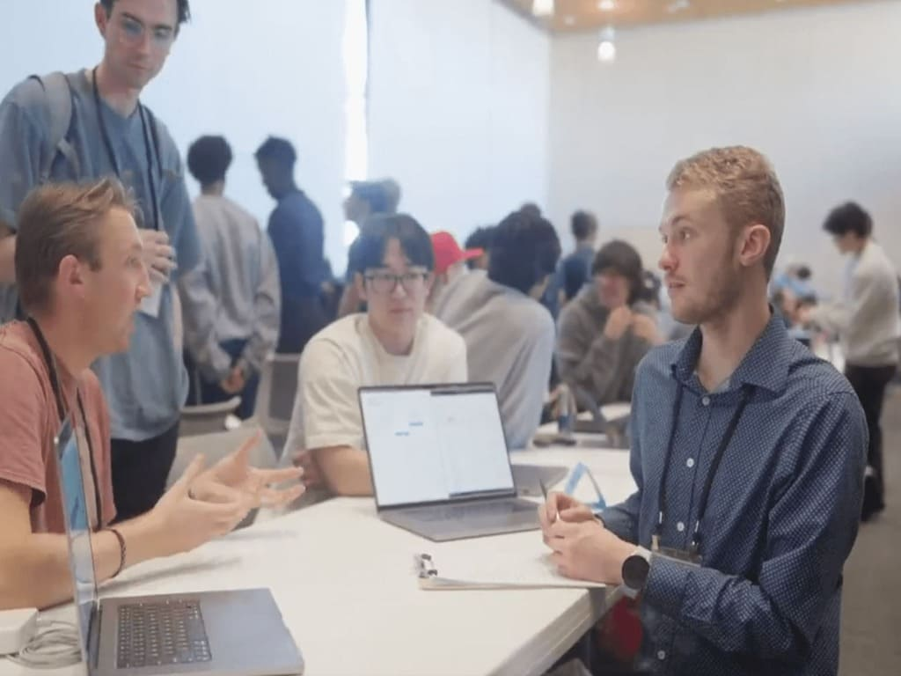
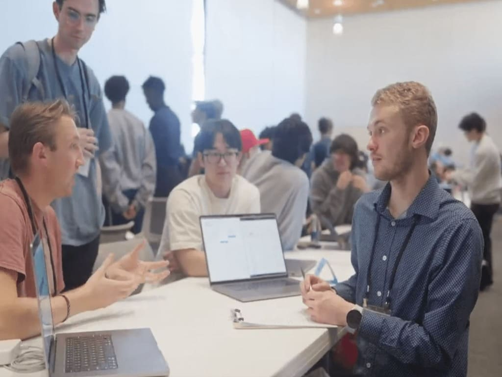

About Me
I’m a data scientist with a background in NLP, analytics instruction, and applied business intelligence. I focus on translating messy data into clear insights and creating tools that help people act with confidence.
I hold a Master's in Data Analytics and have worked with SQL, Python, Tableau, Power BI, and more. I thrive at the intersection of technical depth and practical execution.
Projects & Accomplishments
NLP Streamlit Website
Developed a Streamlit website using web-scraping and NLP techniques to summarize lengthy articles
Movie Recommendations and Maturity Standardization
Built an interactive movie similarity search engine using APIs, document clustering, and text summarization
Wordle Solver
Incorporated statistical analysis and pattern recognition to generate best word guesses in Wordle